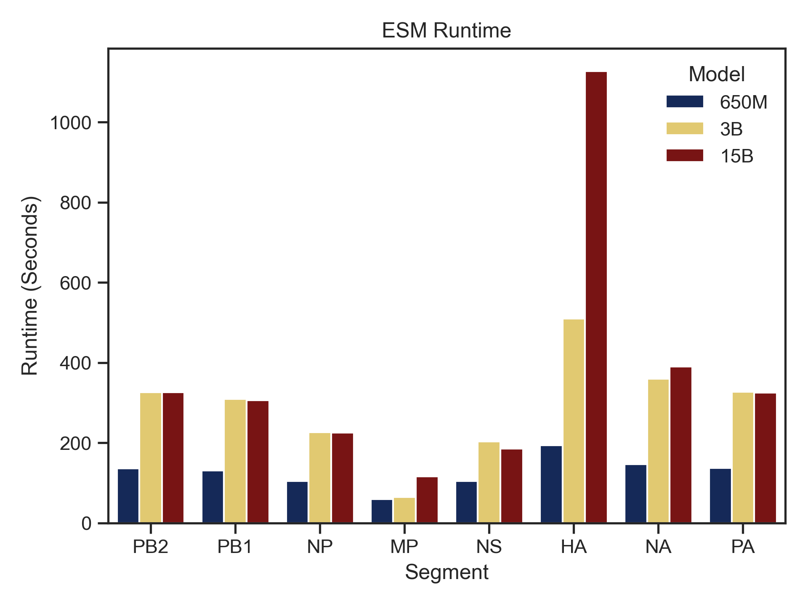
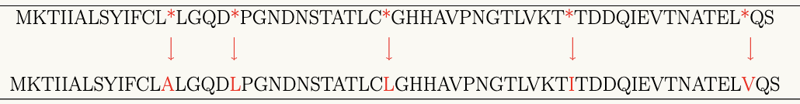
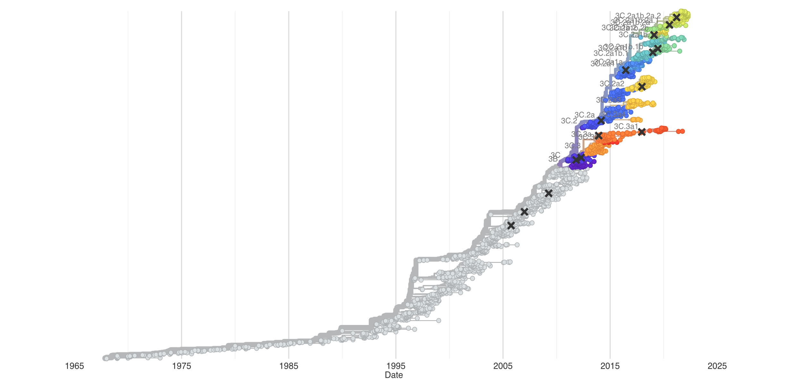
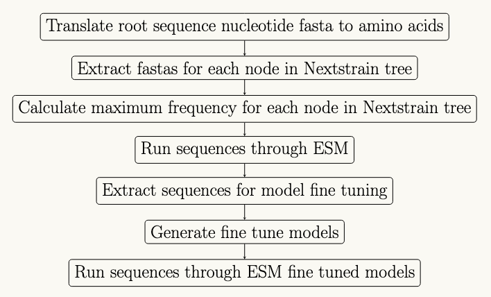
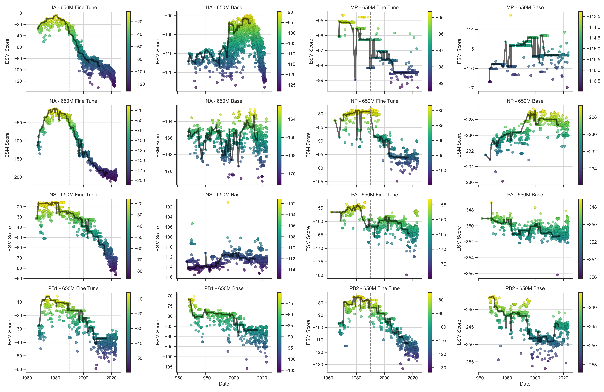
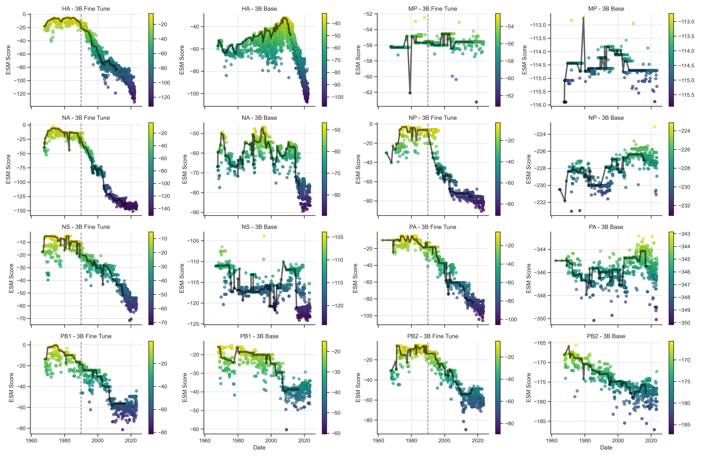
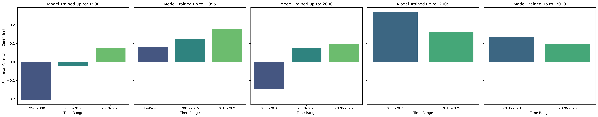
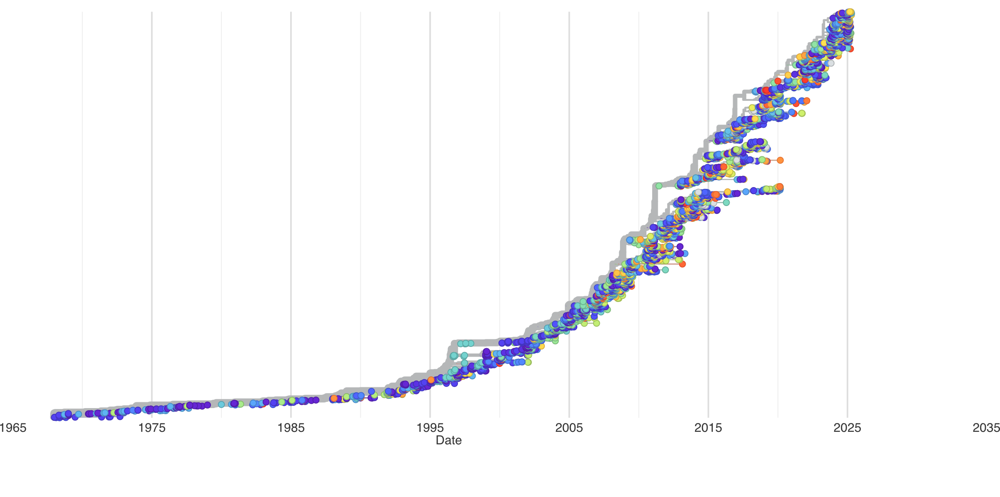

Using ESM to Predict Viable Flu Strains
Carlos Avendaño
Why use ESM for Flu Prediction?
Why use ESM for Flu Prediction?
- ESM and other large language models may be effective tools to assist in predicting next season's
flu strains more accurately, by uncovering new patterns in the proteins of successful flu
variants.
What is ESM?
Evolutionary Scale Modeling (ESM) is a large language model developed by Meta, which can predict
protein viability, structure and function. In this project ESM2 was used, but will be referred
to as ESM in this presentation.
PRETRAINING
Machine learning models are fed huge amounts of data to infer associations, for ESM the largest
model was trained on 15 billion proteins from uniparc.
Three Base Pretrain Models
- 650 Million Protein Model
- 3 Billion Protein Model
- 15 Billion Protein Model
Larger Models Are More Computationally Intensive to Run

FINE-TUNING
These models can be further refined and trained on specific data.

Nextstrain
60 year Nextstrain Tree for H3N2, for flu segment HA.

SnakemakePipeline

Fine Tune vs Base 650M ESM Model Log Likelihood Over Time

Fine Tune vs Base 3B ESM Model Log Likelihood Over Time

Comparing Fine Tune Models to Base Models
Adjusting Fine Tuning Parameters
Time Series Cross Validation

Working With A larger flu tree

Next Steps
- Compare the ability of ESM vs DMS to forecast evolutionarily successful influenza viruses.
- Train models on larger amounts of sequences to prevent over-training in fine tuning and run ESM
on other viruses: SARS-CoV-2